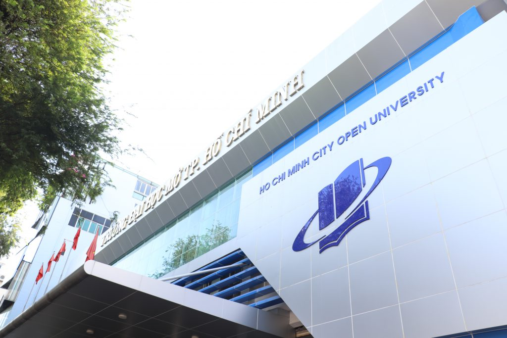

Giới Thiệu Tổng Quan
Hành trình 35 năm xây dựng và phát triển
Lịch Sử Hình Thành
Được thành lập vào năm 1990 và trở thành trường đại học công lập từ năm 2006, đến nay Trường Đại học Mở Thành phố Hồ Chí Minh là trường đại học đa ngành trực thuộc Bộ Giáo dục và Đào tạo, có nhiệm vụ đào tạo đại học và sau đại học, với các hình thức đào tạo chính quy và giáo dục thường xuyên, đào tạo các điểm vệ tinh,…nhằm đáp ứng nhu cầu học tập đa dạng của xã hội, góp phần tăng cường đội ngũ cán bộ khoa học-kỹ thuật cho đất nước.
Quá Trình Phát Triển
Qua 35 năm phát triển, nhà trường đã đào tạo hơn 500.000 cử nhân, thạc sĩ, tiến sĩ trong nhiều lĩnh vực, góp phần quan trọng vào sự phát triển kinh tế - xã hội của đất nước.
Tầm Nhìn - Sứ Mạng - Giá Trị Cốt Lõi
Định hướng phát triển bền vững
🎯 Tầm Nhìn
Trường Đại học Mở Thành phố Hồ Chí Minh phấn đấu trở thành Đại học thực hiện giáo dục mở, định hướng ứng dụng với chất lượng cao.
🚀 Sứ Mạng
Trường thực hiện giáo dục mở, tạo bình đẳng cho mọi người trong tiếp cận giáo dục đại học.
Trường góp phần xây dựng xã hội học tập.
Trường nâng cao tri thức và năng lực nghề nghiệp cho người học bằng các phương thức linh hoạt, thuận tiện và hiệu quả.
📖 Giá Trị Cốt Lõi
Nâng cao tri thức và năng lực nghề nghiệp: Đào tạo linh hoạt, dễ hiểu, hữu ích cho mọi đối tượng.
Gắn kết thực tiễn: Kiến thức luôn gắn liền với ứng dụng thực tế và nhu cầu xã hội.
Không ngừng học hỏi: Luôn cập nhật tri thức mới, nuôi dưỡng tinh thần học tập suốt đời.
Phục vụ cộng đồng: Đóng góp cho lợi ích xã hội thông qua đào tạo và nghiên cứu.
Chuyên nghiệp, sáng tạo và hiệu quả: Làm việc chuyên nghiệp, đổi mới sáng tạo, môi trường hợp tác và tôn trọng.